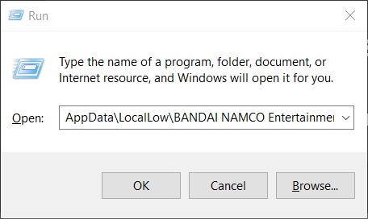

Figure 1. gameplay showcase after cracking Taiko Music Pass and DLC songs
Why?
As of November 18 2024 Modders managed to crack an Subscription Service of Rhythm Festival "Taiko Music Pass" which has songs exclusively to TMP hovewer it costs way too much and paying for game subscription service so they cracked the service with an mod and plugin overall
How to install
Step 1: Download FIles
Step 2: Download Net 6 Dependencies and install them
Step 3: Open the game at least once so that the folder is being created then close it when the game loads to title screen
Step 4: press windows+r and type in this:AppData\LocalLow\BANDAI NAMCO Entertainment Inc_\Taiko no Tatsujin Rhythm Festival

Step 5: open the Zip file and extract archives to the following directories